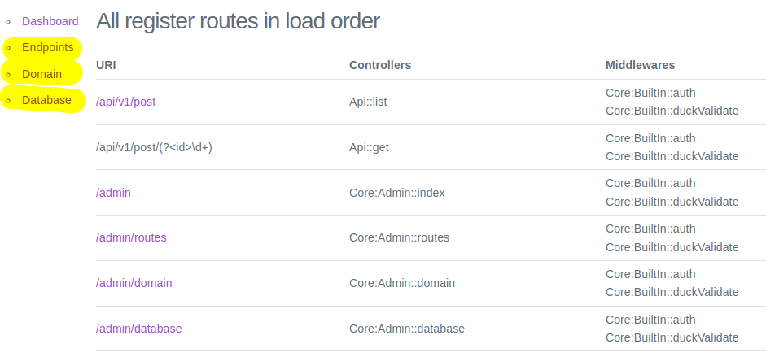

Snidget - это умный PHP фреймворк
Основное отличие от других фреймворков состоит в экстрeмальной лаконичности при наличии достаточного набора возможностей, которыми должен обладать современный web-фреймворк. Код ядра занимает чуть больше 500 строчек кода (Logical Lines of Code), внешние зависимости ограничены только PSR контрактами и dev библиотеками для контроля качества кода.
Из этого следуют некоторые положительные и отрицательные особенности:
- Легкость поддержки. В данный момент, разработка ведется в режиме "выходного дня", и наврятли проекту потребуется больше ресурсов 😅
- Современность. Используются возможности включая PHP 8.6, не поддерживаются старые подходы, которые имеют более качественные аналоги (например, match вместо switch).
- Простота понимания. Проект хорошо задокументирован - средний PHP разработчик может изучить все возможности фреймворка за пару часов.
- Образовательная направленность. Snidget разрабатывается с целью понять, отточить и реализовать на практике передовые концепции разработки ПО.
- Местами допускаются хаки в угоду лаконичности и личных предпочтений автора.
- На данный момент отсутствует обратная совместимость, не рекомендуется использование в production окружении (см. "гайд по осторожному использованию").
- Минимум абстракций и как следствие - низкая гибкость кода. Проект развивается по утилитарному принципу - фичи добавляются "по требованию", а не заранее, на какие-то теоретические случаи.
- Фреймворк пишется под конкретное, специально подготовленное для него окружение, поставляемое как docker-контейнер. Однако, в нем нет ничего специфичного - он основан на официальном alpine образе PHP.
Итого, этот фреймворк отлично подходит для написания pet-проектов или обучения web-разработке, если популярные фрейворки могут быть излишне сложными для вашей задачи
Поехали?
Для оптимального изучения рекомендуется развернуть пустой проект. Для этого достаточно выполнить команду (linux / iOS):
wget domain.com/setup?name=example ...
или, используя composer:
composer create-project pilot114/snidget example
cd example/docker && make serve
ПРИМЕР
Install Context Generator
Download and install the tool using our installation script:
curl -sSL https://raw.githubusercontent.com/context-hub/generator/main/download-latest.sh | sh
This installs the ctx command to your system (typically in /usr/local/bin).
Файловая структура приложения
public - публичные скрипты
bin - консольные скрипты
data - данные (файловое хранилище)
dev - всё, что не нужно непосредственно для работы проекта
src - код проекта
┣━━ HTTP - HTTP хэндлеры (Controllers и Middlewares)
┣━━ CLI - CLI хэндлеры
┣━━ Module - поставляемые модули фреймворка
┣━━ Schema - объекты для передачи данных
┣━━ Domain - собственная доменная логика проекта
┗━━ container.php - конфигурация контейнера зависимостей
По мере роста проекта, рекомендуется высокосвязные части проекта выносить в модули. Структура модуля полностью копирует код в src
bin и public по умолчанию содержат точки входа в приложение (bin/app и public/index.php соответственно), однако допускается размещать в них дополнительные скрипты, которым не требуется bootstrap фреймворка
Логическая структура приложения
Фреймворк подготавливает надежную основу для уровня приложения и уровня доступа к данным, оставляя уровень логики (Domain) под полным контролем разработчика. Если консоль или наоборот, веб часть не нужна - достаточно просто удалить соотвествующие директории. Presentation layer (aka UI) - полностью отделен от фреймворка и должен быть реализован на клиенте
Обратите внимание, пунктирными стрелками обозначены взаимодействия с помощью объектов передачи данных - DTO (располагаются в директории Schema)
Полезные ссылки:
Админ.панель
Один из встроенных модулей - Admin - позволяет просматривать структуру проекта "на лету"

Путь запроса
Все запросы, кроме статики из public, nginx передаёт в public/index.php, где запускается ядро:
Kernel → Router → посредники (луковица) → действие контроллера → Response
Ядро не знает, что вернёт действие: строку, массив или готовый Response - нужный ответ оно соберёт само. По пути отправляются события REQUEST, RESPONSE и, при ошибке, ERROR (см. "Список событий").
Роутинг
Роут - это атрибут Route на публичном методе контроллера. Контроллеры ищутся в App/HTTP/Controller
и в App/Module/*/HTTP/Controller, никакой ручной регистрации не нужно.
#[Route(prefix: 'api/v1')]
class Api
{
#[Route(regex: 'post')]
public function list(): array { ... }
#[Route(regex: 'post/(?<id>\d+)')]
public function get(int $id): array { ... }
#[Route(regex: 'post', method: 'POST')]
public function create(Request $request): Response { ... }
}
Правила простые:
regex- регулярное выражение для URI без слэшей по краям. Сравнивается со всем URI целиком и без учета регистра (#^regex$#i), query-строка в сравнении не участвуетprefixзадается на классе и приклеивается ко всем роутам класса через/. Задать на одном атрибуте иprefix, иregexнельзяmethod- HTTP метод, по умолчаниюGET- именованные группы регулярки (
(?<id>\d+)) передаются в действие одноименными параметрами
Роуты проверяются в порядке загрузки: сначала App/HTTP/Controller, затем модули по алфавиту. Побеждает первый совпавший. Если URI совпал, а метод - нет, клиент получит 405, если не совпало ничего - 404.
Обратите внимание: в модуле Core есть роут .* (контроллер Main), который ловит все GET запросы.
GET роуты модулей, которые идут по алфавиту после Core, до него не доберутся - такие модули стоит
называть раньше по алфавиту или убрать "ловушку" из Core. По этой же причине на неизвестный URI с методом,
отличным от GET, ответ будет 405, а не 404.
Полный список зарегистрированных роутов в порядке проверки показывает админка: /admin/routes.
Контроллеры
Контроллер - обычный класс без базового класса. Параметры действия заполняет контейнер зависимостей:
- именованные группы из URI - по имени параметра (
int $id) - классы - автовайрингом:
Request,Container,Router, ваши сервисы и DTO - остальное - значениями по умолчанию
Например:
#[Route(regex: 'hello/(?<name>\w+)')]
public function hello(string $name, Request $request): string
{
return "Привет, $name! Ты пришел с " . ($request->getHeader('user-agent') ?? 'неизвестно чего');
}
Что можно вернуть из действия:
Response- отправляется как есть- строку - станет телом ответа. Если строка - валидный JSON, заголовок
Content-Type: application/jsonвыставится сам - всё остальное (массивы, DTO, коллекции) - будет сериализовано в JSON через
Response::json()
Response неизменяемый: withStatus() и withHeader() возвращают копию, а результат, который забыли
присвоить, PHP предупредит благодаря атрибуту #[\NoDiscard].
return Response::json(['id' => $id], 201);
return Response::redirect('/admin');
return new Response('Нет доступа', 403)->withHeader('X-Reason', 'auth');
Request - простой объект с публичными полями: uri, method, headers, payload (тело запроса,
разобранное как JSON), query, cookies, requestTimeMs. Имена заголовков хранятся в верхнем регистре
(USER-AGENT), а getHeader() принимает имя в любом регистре.
Посредники (middleware)
Посредники лежат в HTTP/Middleware (приложения или модуля) и оборачивают вызов действия как слои луковицы. Каждый слой - метод вида:
public function auth(Request $request, Closure $next, Logger $logger): mixed
{
if ($request->getHeader('authorization') === null) {
return new Response('Unauthorized', 401);
}
return $next($request);
}
$request и $next передает ядро, остальные параметры - контейнер. Слой может вернуть свой ответ, не вызывая
$next (как в примере выше), или изменить результат следующих слоев.
К чему привязан посредник, определяет атрибут Bind:
#[Bind] // ко всем действиям
#[Bind(class: Api::class)] // ко всем действиям контроллера Api
#[Bind(class: Api::class, method: 'create')] // только к Api::create
#[Bind(priority: 100)] // чем больше приоритет, тем раньше выполняется
Bind можно повесить на класс посредника - тогда слоями станут все его методы (поэтому служебные методы
в такой класс лучше не добавлять), или на отдельный метод - тогда слоем будет только он.
Работает и обратная привязка - со стороны контроллера. В этом случае class и method указывают
на посредника (без method подключаются все методы посредника):
#[Bind(class: BuiltIn::class, method: 'auth', priority: 10)]
public function create(Request $request): Response { ... }
Список посредников каждого роута, уже отсортированный по приоритету, тоже есть в /admin/routes.
Валидация входных данных
Встроенный посредник BuiltIn::duckValidate (модуль Core) работает по принципу утиной типизации:
если тело запроса - JSON-объект, он ищет в Schema/API DTO с точно таким же набором полей
(порядок не важен) и проверяет значения по атрибутам Assert.
class UserLogin extends Type
{
#[Assert(minLength: 4, maxLength: 24)]
public string $login = '';
#[Assert(minLength: 8, maxLength: 24)]
public string $password = '';
}
Если схема не найдена или проверки не прошли - действие не вызывается, клиент получает 422 со списком ошибок:
{"errors": ["Поле App\\Schema\\API\\UserLogin::login не прошло валидацию: Значение короче 4 символов"]}
Проверенные данные пока не превращаются в DTO автоматически: в действии они доступны как массив
$request->payload, а DTO при необходимости собирается вручную - new UserLogin($request->payload).
Две схемы с одинаковым набором полей - ошибка: утка не сможет понять, какая из них имелась в виду. Доступные проверки перечислены в "Списке атрибутов".
Ошибки
Любое исключение из действия или посредника превращается в ответ 500 Internal Server Error, а подробности
с трейсом уходят в лог PHP (error_log) - наружу устройство сервера не раскрывается.
Чтобы ответить 404 или 405, достаточно бросить SnidgetException с соответствующим кодом:
$post = $table->read($id) ?: throw new SnidgetException("Пост $id не найден", 404);
Полезные ссылки:
Запуск команд
Точка входа консоли - bin/app. Команда задается в формате Класс:метод:
bin/app Test:run -a hello -a world -b=test -de one --gamma test2 two three1 three2
Запуск без аргументов выводит список всех команд с описаниями:
$ bin/app
AutoComplete
run auto-complete for commands and options
Database
run Test database
Test
run Creates a new user
Команды запускаются внутри docker-контейнера: make enter открывает в нем shell (zsh) в директории /app.
Команды
Команда - публичный метод с атрибутом Command в классе из директории Command (приложения или модуля).
Имя команды - короткое имя класса и имя метода, описание берется из атрибута:
class Test
{
#[Command('Creates a new user')]
public function run(TestInput $data, Logger $logger): void
{
echo "success!\n";
dump($data);
}
}
Параметры метода заполняет контейнер зависимостей, как и в HTTP контроллерах. Если среди параметров
есть DTO (наследник Snidget\Kernel\Schema\Type), он будет заполнен аргументами командной строки.
Модульный префикс у команд пока не поддерживается, поэтому имена классов команд должны быть уникальны во всем приложении.
Опции и аргументы
Описание входных данных команды - это DTO, публичные свойства которого размечены атрибутом Arg:
class TestInput extends Type
{
/** @var list<string> */
#[Arg('alpha option', short: 'a')]
public array $alpha = [];
#[Arg('beta option', short: 'b')]
public ?string $beta = null;
#[Arg('delta option', short: 'd')]
public bool $delta = false;
#[Arg('first arg', isOption: false)]
public string $first = '';
/** @var list<string> */
#[Arg('third arg', isOption: false)]
public array $third = [];
}
По умолчанию Arg описывает опцию, с isOption: false - позиционный аргумент.
Опции:
- длинное имя совпадает с именем свойства:
--beta=testили--beta test - короткое задается через
short:-b test,-btestили-b=test bool- флаг без значения, короткие флаги можно склеивать:-de=-d -earray- опцию можно повторять, значения накапливаются:-a hello -a world- остальные опции необязательны по своей природе, поэтому их тип должен допускать
null(?string), иначе команда завершится ошибкой intиfloatзначения приводятся к нужному типу
Аргументы заполняются по порядку объявления свойств. Аргумент-массив забирает все оставшиеся значения,
поэтому он должен быть последним. Всё, что идет после --, считается аргументами, даже если начинается с -.
Неизвестная опция или опция без значения - это исключение с понятным сообщением:
Fatal error: Uncaught Snidget\Kernel\SnidgetException: Не указано значение опции --beta
Автодополнение
Для zsh в контейнере подключается функция автодополнения команд и их опций (dev/docker/php/completion.zsh).
Под капотом оно вызывает обычную команду AutoComplete:run модуля Core, которая читает те же атрибуты
Command и Arg - так что новые команды и опции появляются в подсказках сами.
Вывод
Для отладочного вывода есть глобальная функция dump() - в консоли она печатает print_r значения,
в браузере оборачивает его в <pre>. Для цветного вывода заготовлены перечисления CLIColor и CLIStyle (функции, которая их использует, пока нет).
Полезные ссылки:
Подключение
Из коробки поддерживается SQLite - база, которой не нужен отдельный сервер, а значит и лишний контейнер. Работа с ней построена на PDO и состоит из трех частей:
ConnectConfig - параметры подключения (dsn, user, password)
Driver - соединение и выполнение запросов
Table - операции с одной таблицей, схема которой описана DTO
По умолчанию ConnectConfig указывает на базу в памяти (sqlite::memory:): такая база живет ровно один
HTTP запрос или один запуск команды - удобно для тестов и экспериментов, но не для хранения данных.
Для файловой базы драйвер создается явно, а файлы удобно хранить в директории data (она не попадает в git):
$driver = new Driver(new ConnectConfig(dsn: 'sqlite:/app/data/app.db'));
Если файла еще нет, драйвер создаст его сам.
Контейнер хранит созданные объекты, поэтому достаточно один раз положить в него драйвер с нужной базой - дальше автовайринг будет отдавать именно его (подробнее в "Расширении функционала"):
$container->get(Driver::class, ['config' => new ConnectConfig(dsn: 'sqlite:/app/data/app.db')]);
Запросы
Driver - тонкая обертка над PDO: только подготовленные запросы, исключения при ошибках,
строки в виде ассоциативных массивов.
$driver->execute('UPDATE people SET age = :age WHERE id = :id', ['age' => 30, 'id' => 1]); // bool
$rows = $driver->query('SELECT * FROM people WHERE age > :age', ['age' => 18]); // list<array>
$total = $driver->count('SELECT count(*) FROM people'); // int
Транзакции - через замыкание: при любом исключении изменения откатываются, а наружу выбрасывается
SnidgetException с исходной ошибкой внутри.
$driver->transaction(function (Driver $db) {
$db->execute(...);
$db->execute(...);
});
Для ручного управления есть beginTransaction(), commit() и rollback().
Схема таблицы
Схема описывается тем же DTO, которым данные передаются по приложению. Колонки размечаются атрибутом Column,
DTO для базы принято складывать в Schema/Database:
class People extends Type
{
#[Column(name: 'id', type: Type::INTEGER, autoincrement: true)]
public ?int $id = null;
#[Column(name: 'name')]
public ?string $name = 'test';
#[Column(name: 'age', isNull: true, default: 18)]
public int $age = 18;
}
Здесь два разных Type: базовый класс DTO (Snidget\Kernel\Schema\Type) и перечисление типов SQLite
(Snidget\Database\SQLite\Type: NULL, INTEGER, REAL, TEXT, BLOB). Тип колонки берется только
из атрибута, тип PHP свойства на него не влияет: по умолчанию колонка - TEXT, поэтому age из примера
вернется из базы строкой "18". Для чисел тип нужно указать явно.
Параметры Column: name, type, isNull (по умолчанию колонка NOT NULL), autoincrement
(делает колонку PRIMARY KEY AUTOINCREMENT), default.
Работа с таблицей
Table связывает драйвер, имя таблицы и DTO-схему:
$table = $container->get(Table::class, [
'name' => 'people',
'type' => $container->get(People::class),
]);
if (!$table->exist()) {
$table->create(); // CREATE TABLE по атрибутам Column
}
$table->insert(new People(['name' => 'Bob', 'age' => 25]));
$table->count(); // int
$table->find(); // все строки
$table->read(1); // строка по id (или по другому полю: read(25, 'age')), [] если не найдена
$table->like('bo', 'name'); // поиск подстроки без учета регистра (только латиница - так устроен LIKE в SQLite)
insert() пропускает свойства со значением null - так автоинкрементный id заполняет сама база.
create('other') создает таблицу копированием другой (CREATE TABLE ... AS SELECT).
Имена таблиц и полей подставляются в SQL напрямую, поэтому Table проверяет их и выбрасывает исключение
на всё, что не похоже на идентификатор - имя поля из запроса клиента не превратится в SQL-инъекцию.
Значения же всегда передаются через параметры.
Пример работы с таблицей целиком - контроллер App\HTTP\Controller\Api (/api/v1/post).
Структура базы
Meta разбирает схему существующей базы: таблицы, колонки и внешние ключи. Посмотреть на нее можно командой:
bin/app Database:run
Полезные ссылки:
Контейнер зависимостей
Container - сердце фреймворка: через него создаются контроллеры, посредники, команды и слушатели событий,
и он же заполняет параметры их методов. Поэтому в большинстве случаев достаточно просто указать
нужный класс в параметрах - контейнер создаст его вместе со всеми зависимостями.
Правила разрешения параметров (конструктора или метода), по порядку:
- значение, явно переданное по имени параметра
- объект из контейнера, если тип параметра - класс
- значение по умолчанию
null, если тип его допускает, иначе - исключение
Каждый созданный объект запоминается, поэтому повторный get() вернет тот же экземпляр -
по сути, все сервисы являются синглтонами.
$container->get(Table::class, ['name' => 'people', 'type' => new People()]); // драйвер - автовайрингом
$container->get(Table::class, ['name' => 'other']); // вернет ту же Table, параметры уже не важны!
$container->make(Table::class, ['name' => 'other', 'type' => new People()]); // всегда новый объект, он же заменит запомненный
Вызвать метод с автоматически заполненными параметрами можно через call() - именно так ядро вызывает
действия контроллеров:
$container->call(Api::class, 'get', ['id' => 1]);
Связать абстракцию с реализацией - через link(). Реализацию можно указать классом или замыканием,
которое выберет класс в момент запроса:
$container->link(CacheInterface::class, MemoryCache::class);
$container->link(Storage::class, fn(Container $c) => isCli() ? FileStorage::class : MemoryStorage::class);
$container->link(Storage::class); // убрать связь
Ограничение: автовайринг смотрит только на классы, в том числе абстрактные. Параметр с типом-интерфейсом
сам не заполнится даже при наличии link() - такой объект нужно запросить явно, get(CacheInterface::class).
Циклические зависимости (A → B → A) обнаруживаются сразу, с цепочкой классов в сообщении об ошибке.
Где настраивать контейнер? Ядро создает его само, а файл App/container.php пока остается примером и не подключается. Удобное место - слушатель события START: контейнер можно получить параметром (он лежит в самом себе). Консольные команды запускаются без ядра, там настройку придется вызвать явно.
class Services
{
#[Listen(KernelEvent::START)]
public function configure(Container $container): void
{
$container->link(Storage::class, FileStorage::class);
$container->get(Driver::class, ['config' => new ConnectConfig(dsn: 'sqlite:/app/data/app.db')]);
}
}
Модули
Модуль - директория в App/Module, которая повторяет структуру приложения:
App/Module/Shop
┣━━ Command - консольные команды
┣━━ HTTP
┃ ┣━━ Controller - контроллеры
┃ ┗━━ Middleware - посредники
┣━━ Schema
┃ ┗━━ API - DTO для валидации запросов
┗━━ Domain - логика модуля
Регистрировать модуль не нужно: фреймворк находит директории по шаблону App/Module/*/...
(класс AppPaths), а слушателей событий ищет во всем App. Удалить модуль - значит удалить его директорию.
Неймспейс - App\Module\Shop\..., по PSR-4.
Из коробки есть два модуля:
- Core - главная страница, админка (см. "Admin"), встроенные посредники и служебные команды
- Async - асинхронный HTTP сервер на файберах (см. "Async")
Важно помнить про порядок загрузки: сначала код приложения, затем модули по алфавиту. От него зависит порядок проверки роутов (см. "HTTP").
События
Ядро сообщает о ключевых моментах жизненного цикла событиями, а подписаться на них - значит добавить метод
с атрибутом #[Listen] в любой класс приложения. Так подключаются логирование, метрики, настройка
сервисов и прочие сквозные задачи, не трогая ядро. Подробнее - в "Списке событий".
Инфраструктура
Проект поставляется вместе с окружением: docker-контейнеры с PHP 8.6 (php-fpm, xdebug) и nginx. На машине разработчика нужны только docker и make.
make build - собрать образы
make install - поставить зависимости (composer install)
make dev - запустить nginx + php-fpm, порт задан в dev/docker/.env
make docs - собрать эту документацию
make enter - shell внутри php-контейнера
make audit - уязвимости в зависимостях
make outdated - устаревшие зависимости
Внутри контейнера доступны команды контроля качества:
composer test - тесты PHPUnit с отчетом о покрытии (dev/tests/coverage)
composer check - PHPStan на максимальном уровне, Rector и PHPCS - ничего не меняет
composer fix - автоматические исправления Rector и PHPCBF
composer hook-install подключает git-хуки из dev/git-hooks: перед коммитом прогоняются проверки и тесты.
Всё, что не нужно для работы самого приложения - docker, тесты, конфиги анализаторов, документация - лежит в dev.
Полезные ссылки:
Где живет представление
В Snidget нет шаблонизатора и нет сборки фронтенда - и это осознанное решение. Уровень представления (см. "Основы") отделен от фреймворка и реализуется на клиенте, а бэкенд отдает данные: обычно JSON, который получается сам, если вернуть из действия массив или DTO.
Получается привычная схема: статическая страница + API.
Статика
Всё, что лежит в public, nginx отдает напрямую, минуя PHP. Остальные запросы уходят в public/index.php.
public
┣━━ index.php - точка входа, трогать не нужно
┗━━ test
┗━━ index.html - доступна по адресу /test/index.html
Индексный файл директории для nginx - только index.php, поэтому HTML страницы открываются по полному имени. Если страница и API отдаются с одного адреса, никаких настроек CORS не требуется.
Страница без сборки
Современному браузеру не нужны ни сборщик, ни фреймворк: fetch, async/await и DOM API работают из коробки.
Минимальная страница, которая берет данные из API, может выглядеть так:
<p id="total"></p>
<ul id="items"></ul>
<script type="module">
const { total, items } = await (await fetch('/api/v1/post')).json()
document.querySelector('#total').textContent = `Всего: ${total}`
for (const item of items) {
document.querySelector('#items').append(Object.assign(document.createElement('li'), {
textContent: `${item.name} (${item.age})`,
}))
}
</script>
textContent вставляет данные как текст, а не как разметку, поэтому экранировать их вручную не нужно.
Так же сделан и этот сайт документации: без внешних библиотек, только HTML, немного CSS и несколько строк JS.
make docs собирает страницы из markdown файлов в dev/docs/md в один dev/docs/index.html.
HTML с сервера
Если нужна страница, сформированная на сервере, действие может вернуть строку с HTML - так устроена
админка (см. "Admin"). Для пары служебных страниц этого достаточно. Данные пользователя перед вставкой
в разметку нужно экранировать через htmlspecialchars(), а для чего-то большего стоит
подключить шаблонизатор - например, Twig, через composer и контейнер.
Полезные ссылки:
Snidget не тянет внешних реализаций: из зависимостей - только интерфейсы PSR, а реализации свои и короткие. Это значит, что любую из них можно заменить на "взрослую" библиотеку с тем же интерфейсом.
PSR-11: контейнер зависимостей
Snidget\Kernel\PSR\Container - контейнер с автовайрингом. Разбирается подробно в "Расширении функционала".
$container->get(Router::class); // создать или взять уже созданный
$container->has(Router::class); // создан ли объект
Отличия от буквы стандарта:
get()принимает второй аргумент - параметры конструктораhas()возвращаетtrueтолько для уже созданных объектов, а не для всех, которые можно создать- ошибки - это
SnidgetException, интерфейсы исключений PSR-11 не реализованы
PSR-14: события
Snidget\Kernel\PSR\Event\EventManager - диспетчер событий. Слушатели регистрируются атрибутом #[Listen],
события - варианты перечислений. Кроме стандартного dispatch() есть короткий emit($event, $data),
которым пользуется ядро. Подробнее - в "Списке событий".
PSR-3: логгер
Snidget\Kernel\PSR\Log\Logger копит записи в памяти: время, уровень, сообщение и контекст в JSON.
$logger->info('Пользователь вошел', ['id' => 42]);
$logger->log('warning', 'Медленный запрос'); // уровень - строка или LogLevel
$logger->getLog(); // все записи
echo $logger; // записи построчно
Записи живут до конца запроса, в файл или куда-то еще логгер ничего не пишет - это задача для своего
слушателя события FINISH. Плейсхолдеры вида {id} в сообщении не подставляются. Ядро само пишет в лог
уровня NOTICE каждый вызов слушателя событий.
Логгер берется из контейнера, поэтому в рамках запроса он один на всё приложение.
PSR-16: кэш
Snidget\Kernel\PSR\Cache\MemoryCache - кэш в памяти процесса с поддержкой времени жизни (TTL)
в секундах или DateInterval.
$cache->set('user:42', $user, 60);
$cache->get('user:42', 'default');
$cache->setMultiple(['a' => 1, 'b' => 2], new DateInterval('PT1M'));
Ключ - до 255 символов из латиницы, цифр, _ и :, иначе InvalidCacheKeyException.
При обычном запуске через php-fpm кэш живет один запрос, а в асинхронном режиме - пока работает сервер.
PSR-4 и PSR-12
Автозагрузка классов - по PSR-4 (Snidget\ → src, App\ → App). На этом же соглашении построен поиск
контроллеров, команд и посредников: имя класса вычисляется из пути к файлу, поэтому файлы должны
называться так же, как классы. Стиль кода - PSR-12, его проверяет composer check.
Чего нет
HTTP сообщения (PSR-7) и посредники (PSR-15) свои, упрощенные: Request и Response намеренно сделаны
проще стандартных интерфейсов.
Полезные ссылки:
Конфигурация в Snidget - это атрибуты PHP 8 прямо в коде: никаких YAML, XML и отдельных файлов роутинга. Фреймворк находит размеченные классы сам, по директориям приложения и модулей.
Route
Snidget\HTTP\Route - HTTP роут. Цель: метод контроллера или класс контроллера (для префикса).
#[Route(prefix: 'api/v1')] // на классе
#[Route(regex: 'post/(?<id>\d+)', method: 'GET')] // на методе
regex- регулярное выражение URI без слэшей по краям, именованные группы становятся параметрами действияprefix- общий префикс роутов класса, вместе сregexне задаетсяmethod- HTTP метод, по умолчаниюGET
Ищется в: HTTP/Controller. Подробнее - в разделе "HTTP".
Bind
Snidget\HTTP\Bind - привязка посредника. Цель: класс или метод, атрибут повторяемый.
#[Bind(class: Api::class, method: 'create', priority: 10)]
class,method- на посреднике: контроллер и действие, к которым он привязан (без них - ко всем). На контроллере: класс и метод посредника, которого нужно подключитьpriority- чем больше, тем раньше выполняется слой, по умолчанию0
Ищется в: HTTP/Middleware и на контроллерах. Подробнее - в разделе "HTTP".
Assert
Snidget\Kernel\Assert - правило валидации. Цель: публичное свойство DTO, атрибут повторяемый.
#[Assert(minLength: 4, maxLength: 24, pattern: '/^\w+$/')]
public string $login = '';
min,max- границы числаminLength,maxLength- границы длины строки (в символах, а не байтах)pattern- регулярное выражение, которому должна соответствовать строкаnotBlank- значение не может бытьnullили пустой строкой
Если задано строковое правило, а пришло не строка - это тоже ошибка: число не проскочит мимо проверки длины.
Проверяет DTO целиком Assert::validateType($dto), возвращая ошибки по полям, а для JSON запросов
проверка выполняется автоматически (см. "Валидация входных данных").
Column
Snidget\Database\SQLite\Column - колонка таблицы. Цель: публичное свойство DTO.
#[Column(name: 'id', type: Type::INTEGER, autoincrement: true)]
public ?int $id = null;
name- имя колонкиtype- тип SQLite (Snidget\Database\SQLite\Type), по умолчаниюTEXTisNull- разрешитьNULL, по умолчанию колонкаNOT NULLautoincrement-PRIMARY KEY AUTOINCREMENTdefault- значение по умолчанию
Подробнее - в разделе "Базы данных".
Command
Snidget\CLI\Command - консольная команда. Цель: публичный метод класса.
#[Command('Creates a new user')]
public function run(TestInput $data): void
description- описание для списка команд и автодополнения
Ищется в: Command. Подробнее - в разделе "CLI".
Arg
Snidget\CLI\Arg - опция или аргумент команды. Цель: публичное свойство DTO команды.
#[Arg('beta option', short: 'b')]
public ?string $beta = null;
description- описание для автодополненияisOption-true(по умолчанию) для опции,falseдля позиционного аргументаshort- короткое имя опции из одной буквы
Подробнее - в разделе "CLI".
Listen
Snidget\Kernel\PSR\Event\Listen - подписка на событие. Цель: метод класса, атрибут повторяемый.
#[Listen(KernelEvent::ERROR)]
public function onError(Throwable $data): void
event- вариант любого перечисления (enum)
Ищется во всем App. Подробнее - в "Списке событий".
Атрибуты PHP
Кроме своих, фреймворк использует встроенные атрибуты языка - их стоит взять на вооружение и в приложении:
#[\Override]- метод обязан переопределять метод родителя, иначе ошибка компиляции#[\NoDiscard]- предупреждение, если результат вызова не использован. Им помечены методы неизменяемых объектов (Response::withHeader(),Collection::map()), где потерянный результат - почти всегда ошибка
События ядра
Все системные события отправляет Kernel, их список - перечисление Snidget\Kernel\PSR\Event\KernelEvent.
START- создание ядра, еще до регистрации обработчиков ошибок. Данных нетREQUEST- запрос получен, роутинг еще не выполнялся. Данные -RequestRESPONSE- ответ готов и сейчас будет отправлен. Данные -ResponseERROR- необработанное исключение (ответ 500), warning или notice PHP, исключение вне обработки запроса. Данные -ThrowableFINISH- завершение скрипта (shutdown), как можно позже. Данных нет
Порядок для обычного запроса: START → REQUEST → RESPONSE → FINISH, при ошибке между REQUEST и RESPONSE добавляется ERROR. Ответы 404 и 405 ошибкой не считаются и ERROR не вызывают.
В асинхронном режиме (модуль Async) START и FINISH случаются один раз на весь процесс сервера, а REQUEST и RESPONSE - на каждый запрос.
Консольные команды запускаются без ядра, поэтому в CLI события ядра не отправляются.
Подписка
Слушатель - метод любого класса из App (или из ядра фреймворка) с атрибутом Listen:
class RequestLogger
{
#[Listen(KernelEvent::REQUEST)]
public function onRequest(Request $data, Logger $logger): void
{
$logger->info("{$data->method} /{$data->uri}");
}
#[Listen(KernelEvent::START)]
#[Listen(KernelEvent::FINISH)]
public function onBoundary(): void { ... }
}
- данные события приходят в параметр с именем
$data- имя важно, тип можно указывать любой подходящий - остальные параметры, как обычно, заполняет контейнер
- атрибут повторяемый: один метод может слушать несколько событий
- директория не важна: слушатели ищутся во всем App, включая модули
Пример из самого фреймворка - Snidget\Kernel\ErrorHandler: он копит ошибки по событию ERROR, а по FINISH
пишет их в лог PHP (под php-fpm) или выводит в консоль (асинхронный сервер работает как CLI процесс).
Свои события
Событием может быть любое перечисление (enum). Отправляется оно через EventManager:
enum OrderEvent
{
case CREATED;
case PAID;
}
$eventManager->emit(OrderEvent::CREATED, $order);
Слушатели различают события только по имени варианта, без имени перечисления. Поэтому OrderEvent::START
сработает вместе с KernelEvent::START - давайте своим событиям уникальные имена.
EventManager реализует PSR-14, и его dispatch() принимает в том числе объекты-события
(с поддержкой StoppableEventInterface), но подписаться на них через #[Listen] пока нельзя - атрибут
принимает только варианты перечислений.
Админка - часть модуля Core (контроллер App\Module\Core\HTTP\Controller\Admin), которая показывает
структуру проекта "на лету", прямо из атрибутов кода. Открывается по адресу /admin.
Разделы
- Dashboard (/admin) - заготовка под сводку: счетчики из других разделов, метрики качества кода, информация о проекте и репозитории
- Endpoints (/admin/routes) - все роуты в порядке проверки: URI, действие контроллера и цепочка посредников, уже отсортированная по приоритету. Лучший способ понять, почему запрос попал не туда, куда ожидалось. Таблица команд CLI пока пустая
- Domain (/admin/domain) и Database (/admin/database) - заготовки под обзор доменных классов и сущностей базы
- Profiler - ссылка на веб-интерфейс профилировщика SPX. Сейчас SPX не поддерживает PHP 8.6 и в docker-образ не входит, поэтому ссылка не работает
Имена классов в таблицах сокращены: Core:BuiltIn::auth вместо App\Module\Core\HTTP\Middleware\BuiltIn::auth.
Как устроена
Админка - обычный контроллер, без шаблонизатора и сборки фронта: HTML собирается строками,
оформление - десяток строк встроенного CSS, без внешних библиотек. Данные берутся из тех же объектов,
что использует ядро: Router отдает роуты, MiddlewareManager - посредников для каждого из них.
Новый раздел - это новый метод с #[Route] и строка в списке ссылок $links.
Безопасность
Доступ в админку пока никак не ограничен: встроенный посредник BuiltIn::auth - заготовка, которая
пропускает все запросы. Админка не показывает секретов, но раскрывает устройство приложения,
поэтому за пределами локальной разработки ее нужно закрыть - своим посредником с #[Bind(class: Admin::class)]
или убрав контроллер из модуля.
Асинхронность в PHP: минимальный практический пример
Предпосылки
Для начала нужно понять конечную цель - зачем вообще нужна асинхронность, что она нам даёт? Даёт она очень простую вещь - возможность не простаивать в ожидании окончания медленных операций (как показательные примеры: сетевые запросы, обращения к файловой системе), а делать что-то полезное. Другими словами, аcинхронность полезна в условиях большого количества операций ввода/вывода при высоких требованиях по утилизации CPU.
Сейчас эта проблема нивелируется на архитектурном уровне, а именно запуском php в виде модуля к стороннему http-серверу в режиме менеджера процессов. Процессы независимы, один процесс не может замедлить выполнение другого или как-то напрямую нарушить его работу. Также приятным бонусом дается "бесплатная" паралельность - процессы могут быть раскиданы системой на разные ядра процессора.
Это простое решение, оно работает вполне приемлемо, однако в рамках каждого отдельного процесса мы все равно ждём. Безполезные накладные расходы на переключение между процессами и отстутсвие возможности организации [кооперативной многозадачности] в совокупности дают ряд ограничений, которые не позволяют писать на PHP полноценные приложения реального времени.
А что мешает?
В техническом смысле - ничего. Мешает только непонимание как собственно начать писать такой код. Чтож, давайте разбираться. К концу этой статьи у нас будет полностью работоспособный пример кода для организации кооперативной многозадачности с event-loop, таймерами, асинхронностью и т.д.
Чтобы в очередной раз не разжевывать все термины - вот ссылки на статьи по теме: [...]
пишем шедулер
Итак, представим что у нас есть задача сходить по сети, посчитать что-то на основе полученных данных и записать результат на диск, очень такой типичный набор действий. Для удобства, запишем в результат работы также временные отметки наших действий.
$data = file_get_contents(''); $prepared = prepare($data); file_put_contents(data, 'name'); echo 'done';
Так как каждый следующий этап является результатом работы предыдущего, возникает мысль что ничего ускорить нельзя чисто логически. Однако, тут прилетает требование "а давайте скачивать не 1 ресурс, а произвольное кол-во, а еще бы в реальном времени прогресс видеть. А еще бы отменять что подвисло..."
Для начала пробуем допилить существующий код:
function job() { $data = file_get_contents(''); $prepared = prepare($data); file_put_contents(data, 'name'); }
$urls = []; foreach($urls as $url) { job($url); }
в чем отличия от синхронного кода внутри и снаружи, дебаг, сервер и крон бонус несколько ядер и замеры